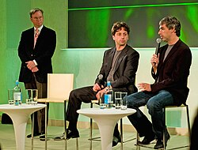

Eric Schmidt
Source: https://en.wikipedia.org/wiki/Eric_Schmidt
Category: founders_and_leaders
Depth: 1
Summary
Eric Emerson Schmidt is an American businessman and former computer engineer who was the chief executive officer of Google from 2001 to 2011 and the company's executive chairman from 2011 to 2015. He also was the executive chairman of parent company Alphabet Inc. from 2015 to 2017, and technical advisor at Alphabet from 2017 to 2020. Since 2025, he has been the CEO of Relativity Space, an aerospace manufacturing company. As of 2025, he is one of the wealthiest people in the world according to Bloomberg Billionaires Index with an estimated net worth of US$54.5 billion.
Images

Full Article
American businessman and software engineer (born 1955)
For other people with similar names, see Eric Schmidt (disambiguation).
Eric Emerson Schmidt (born April 27, 1955) is an American businessman and former computer engineer who was the chief executive officer of Google from 2001 to 2011 and the company's executive chairman from 2011 to 2015. He also was the executive chairman of parent company Alphabet Inc. from 2015 to 2017, and technical advisor at Alphabet from 2017 to 2020. Since 2025, he has been the CEO of Relativity Space, an aerospace manufacturing company. As of 2025, he is one of the wealthiest people in the world according to Bloomberg Billionaires Index with an estimated net worth of US$54.5 billion.
As an intern at Bell Labs, Schmidt in 1975 was co-author of Lex, a software program to generate lexical analysers for the Unix computer operating system. In 1983, he joined Sun Microsystems and worked in various roles. From 1997 to 2001, he was chief executive officer (CEO) of Novell. Schmidt has been on various other boards in academia and industry, including the boards of trustees for Carnegie Mellon University, Apple, Princeton University, and the Mayo Clinic. He also owns a minority stake in the National Football League (NFL) team Washington Commanders.
In 2008, during his tenure as Google's chairman, Schmidt campaigned for Barack Obama, and subsequently became a member of Obama's President's Council of Advisors on Science and Technology. In the meantime, Schmidt had left Google, and founded philanthropic venture Schmidt Futures, in 2017. Under his tenure, Schmidt Futures provided the compensation for two science-office employees in the Office of Science and Technology Policy. Schmidt became the first chair of the U.S. National Security Commission on Artificial Intelligence in 2018, while keeping shares of Alphabet stock, worth over $5.3 billion in 2019. In October 2021, Schmidt founded the Special Competitive Studies Project (SCSP) and has since served as its chairman. Schmidt had a major influence on the Biden administration's science policy after 2021, especially shaping policies on AI.
Early life and education
Schmidt was born in Falls Church, Virginia, later moving to Blacksburg, Virginia. He is one of three sons of Eleanor, who had a master's degree in psychology, and Wilson Emerson Schmidt, a professor of international economics at Virginia Tech and Johns Hopkins University, who worked at the U.S. Treasury Department during the Nixon Administration. Schmidt spent part of his childhood in Italy as a result of his father's work and has stated that it had changed his outlook.
Schmidt graduated from Yorktown High School in the Yorktown neighborhood of Arlington County, Virginia, in 1972, after earning eight varsity letter awards in long-distance running. He attended Princeton University, starting as an architecture major and switching to electrical engineering, earning a Bachelor of Science in Engineering degree in 1976.
From 1976 to 1980, Schmidt resided at the International House Berkeley, where he met his future wife, Wendy Boyle. In 1979, at the University of California, Berkeley, Schmidt earned an EECS M.S. degree for designing and implementing a network (Berknet) linking the campus computer center with the CS and EECS departments. There, he also earned a PhD degree in 1982 in EECS; Computer Engineering, with a dissertation about the problems of managing distributed software development and tools for solving these problems.
Career
Early career
Early in his career, Schmidt held a series of technical positions with IT companies including Byzromotti Design, Bell Labs (in research and development), Zilog, and Palo Alto Research Center (PARC).
During his summers at Bell Labs, he and Mike Lesk wrote Lex, a program used in compiler construction that generates lexical-analyzers from regular-expression descriptions.
Sun Microsystems
In 1983, Schmidt joined Sun Microsystems as its first software manager. He rose to become director of software engineering, vice president and general manager of the software products division, vice president of the general systems group, and president of Sun Technology Enterprises.
During his time at Sun, he was the target of two notable April Fool's Day pranks. In the first, his office was taken apart and rebuilt on a platform in the middle of a pond, complete with a working phone and workstation on the corporate Ethernet network. The next year, a working Volkswagen Beetle was taken apart and re-assembled in his office.
Novell
In April 1997, Schmidt became the CEO and chairman of the board of Novell. He presided over a period of decline at Novell where its IPX protocol was being replaced by open TCP/IP products, while at the same time Microsoft was shipping free TCP/IP stacks in Windows 95, making Novell much less profitable. In 2001, he departed after the acquisition of Cambridge Technology Partners.
Google founders Larry Page and Sergey Brin interviewed Schmidt. Impressed by him, they recruited Schmidt to run their company in 2001 under the guidance of venture capitalists John Doerr and Michael Moritz.
In March 2001, Schmidt joined Google's board of directors as chair, and became the company's CEO in August 2001. At Google, Schmidt shared responsibility for Google's daily operations with founders Page and Brin. Prior to the Google initial public offering, Schmidt had responsibilities typically assigned to the CEO of a public company and focused on the management of the vice presidents and the sales organization. According to Google, Schmidt's job responsibilities included "building the corporate infrastructure needed to maintain Google's rapid growth as a company and on ensuring that quality remains high while the product development cycle times are kept to a minimum."
Upon being hired at Google, Eric Schmidt was paid a salary of $250,000 and an annual performance bonus. He was granted 14,331,703 shares of Class B common stock at $0.30 per share and 426,892 shares of Series C preferred stock at purchase price of $2.34.
In 2004, Schmidt and the Google founders agreed to a base salary of US$1 (which continued through 2010) with other compensation of $557,465 in 2006, $508,763 in 2008, and $243,661 in 2009. He did not receive any additional stock or options in 2009 or 2010.
Most of his compensation was for "personal security" and charters of private aircraft.
In 2007, PC World ranked Schmidt as the first on its list of the 50 most important people on the Web, along with Google co-founders Page and Brin.
In its 2011 'World's Billionaires' list, Forbes ranked Schmidt as the 136th-richest person in the world, with an estimated wealth of $7 billion.
On January 20, 2011, Google announced that Schmidt would step down as the CEO of Google but would take new title as executive chairman of the company and act as an adviser to co-founders Page and Brin. Google gave him a $100 million equity award in 2011 when he stepped down as CEO. On April 4, 2011, Page replaced Schmidt as the CEO.
On December 21, 2017, Schmidt announced he would be stepping down as the executive chairman of Alphabet. Schmidt stated that "Larry, Sergey, Sundar and I all believe that the time is right in Alphabet's evolution for this transition."
In February 2020, Schmidt left his post as technical advisor of Alphabet after 19 years with the company.
Department of Defense
In March 2016, it was announced that Schmidt would chair a new advisory board for the Department of Defense, titled the Defense Innovation Advisory Board. The advisory board serves as a forum connecting mainstays in the technology sector with those in the Pentagon.
To avoid potential conflicts of interest within the role, where Schmidt retained his role as technical adviser to Alphabet, and where Google's bidding for the multi-million dollar Pentagon cloud contract, the Joint Enterprise Defense Infrastructure, or JEDI, was ongoing: Schmidt screened emails and other communications, stating, "'There’s a rule: I'm not allowed to be briefed' about Google or Alphabet business as it relates to the Defense Department". He exited the position November 2020.
From 2019 to 2021, Schmidt co-chaired the National Security Commission on Artificial Intelligence with Robert O. Work.
Role in illegal non-recruiting agreements
While working at Google, Schmidt was involved by early 2005 in activities that later became the subject of the High-Tech Employee Antitrust Litigation case that resulted in a settlement of $415 million paid by Adobe, Apple, Google and Intel to employees. In one March, 2007 incident, after receiving a complaint from Steve Jobs of Apple, Schmidt sent an email to Google's HR department saying; "I believe we have a policy of no recruiting from Apple and this is a direct inbound request. Can you get this stopped and let me know why this is happening? I will need to send a response back to Apple quickly so please let me know as soon as you can. Thanks Eric". Schmidt's email led to a recruiter for Google being "terminated within the hour" for having adhered to the illegal scheme. Under Schmidt, there was a "Do Not Call list" of companies Google would avoid recruiting from. According to a court filing, another 2005 email exchange shows Google's human resources director asking Schmidt about sharing its no-cold-call agreements with competitors. Schmidt responded that he preferred it be shared "verbally[,] since I don't want to create a paper trail over which we can be sued later?"
Apple
On August 28, 2006, Schmidt was elected to Apple Inc.'s board of directors, a position he held until August 2009.
Broad Institute
Schmidt was chairman of the board of directors at Broad Institute from 2021 until 2025.
Other ventures
Schmidt sat on the boards of trustees of Carnegie Mellon University and Princeton University. He taught at Stanford Graduate School of Business in the 2000s. Schmidt serves on the boards of the Institute for Advanced Study in Princeton, the Khan Academy, and The Economist.
New America is a non-profit public-policy institute and think tank, founded in 1999. Schmidt succeeded founding chairman James Fallows in 2008 and served as chairman until 2016.
Schmidt runs the family office Hillspire, which was founded in 2006. The business has invested in more than 22 AI firms since 2019, and is the number-one ranked family office as of 2026.
Founded in 2010 by Schmidt and Dror Berman, Innovation Endeavors is an early-stage venture capital firm. The fund, based in Palo Alto, California, invested in companies such as Mashape, Uber, Quixey, Gogobot, BillGuard, and Formlabs.
In July 2020, Schmidt started working with the U.S. government to create a tech college as part of an initiative to educate future coders, cyber-security experts and scientists.
In August 2020, Schmidt launched the podcast Reimagine with Eric Schmidt. In December 2021, Schmidt joined Chainlink Labs as a strategic advisor. In October 2022, he co-authored a piece titled "America Could Lose the Tech Contest With China" for Foreign Affairs with Ylli Bajraktari, former executive director of the U.S. National Security Commission on Artificial Intelligence. In March 2023, Schmidt testified at a U.S. House Committee on Oversight and Accountability hearing regarding AI. He invests in startups that develop military technologies including Rebellion Defense, Istari, Swift Beat, and White Stork, which developed the Merops counterdrone system. In June 2023, Schmidt also invested in Keeta, a startup developing a cross-border payments platform using proprietary ledger technology.
In 2022, Schmidt was appointed to the National Security Commission on Emerging Biotechnology, a legislative commission charged with making policy recommendations to Congress and the Executive Branch.
Schmidt has been the chairman of SandboxAQ, a Palo Alto-based quantum computing and AI company that spun off from Alphabet Inc. in 2022.
In 2023, Schmidt was a part of an investment group led by Josh Harris that purchased the Washington Commanders, an American football team belonging to the National Football League (NFL), for $6.05 billion. In March 2025, Schmidt took over as CEO of Relativity Space, an aerospace manufacturing company, after acquiring a controlling stake in the company.
Political activity
Schmidt was an informal advisor and major donor to Barack Obama's 2008 presidential campaign, and began campaigning the week of October 19, 2008, on behalf of the candidate. He was mentioned as a possible candidate for the Chief Technology Officer position, which Obama created in his administration, and Obama considered him for Commerce Secretary. After Obama won in 2008, Schmidt became a member of President Obama's transition advisory board and then a member of the United States President's Council of Advisors on Science and Technology (PCAST). Schmidt has served on Google's government relations team.
Schmidt has proposed that the easiest way to solve all of the domestic problems of the United States at once is by a stimulus program that rewards renewable energy and, over time, attempts to replace fossil fuels with renewable energy.
Secretary of Defense Ash Carter appointed Schmidt as chairman of the DoD Innovation Advisory Board announced March 2, 2016. It was modeled on the Defense Business Board with the purpose of facilitating the Pentagon to become more innovative and adaptive.
Schmidt was an investor in The Groundwork, a start-up company associated with Hillary Clinton's 2016 presidential campaign. For example, it charged the campaign $177,000 in the second quarter of 2015. By May 2016, the campaign had spent $500,000 on it.
Schmidt was an investor in Timshel, another start up company associated with Hillary Clinton's 2016 presidential campaign. Timshel was the parent company of The Groundwork.
Philanthropy
Schmidt Family Foundation and Schmidt Ocean Institute
Main article: Schmidt Family Foundation
In 2006, Eric Schmidt and Wendy Schmidt established the Schmidt Family Foundation, to support the sustainable use of natural resources. The foundation's subsidiaries include ReMain Nantucket and the Marine Science and Technology Foundation; its main charitable program is the 11th Hour Project. The foundation has also awarded grants to the Natural Resources Defense Council and the Energy Foundation.
The foundation is the main funder of the Schmidt Ocean Institute, which supports oceanographic research by operating the R/V Falkor (too) and previously the RV Falkor and Lone Ranger, a converted salvage tug.
Schmidt and his wife also established the Eric & Wendy Schmidt Data Science for Social Good Summer Fellowship.
The Schmidts, working with Hart Howerton, a San Francisco architectural firm that specializes in large-scale land use, have inaugurated several projects on the island of Nantucket that seek to sustain the unique character of the island and to minimize the impact of seasonal visitation on the island's core community.
Mrs. Schmidt offered the prize purse of the Wendy Schmidt Oil Cleanup X CHALLENGE, a challenge award for the efficient capturing of crude oil from seawater motivated by the Deepwater Horizon oil spill.
The foundation also donated $10 million to the Monterey Bay Aquarium in 2015.
In 2022, the Schmidts gave $12.6 million to their alma mater, Berkeley, to establish the Schmidt Center for Data Science and the Environment. They have also been contributors to Berkeley's International House and its Simons Institute for the Theory of Computing.
Schmidt Transformative Technology Fund
In 2009, Eric and Wendy Schmidt endowed the Schmidt Transformative Technology Fund at Princeton University with $25 million. The Fund's purpose is to support research and technology in the natural sciences and engineering, encouraging collaboration across disciplines. It awarded $1.2 million in grants in 2010 and $1.7 million in grants in 2012.
Schmidt Science Fellows
Created in partnership with the Rhodes Trust, the Schmidt Science Fellows program is part of a $100 million commitment to drive scientific leadership and interdisciplinary research. The program features a Global Meeting Series including exclusive sessions at world-leading institutions including Oxford, Cambridge, MIT, and Harvard. Fellows receive a stipend to participate in postdoctoral study which differs from their existing expertise.
Rise
An initiative of Schmidt Futures and the Rhodes Trust, which aims to increase the opportunity for exceptional young people worldwide to serve others throughout their lives. The program, which will find and elevate young people between the ages of 15 and 17 from around the world, will be designed to encourage a lifetime of service and learning by providing support that could include scholarships, career services, and funding opportunities
Public positions
Tax avoidance
Schmidt has claimed that Google's use of artificial distinctions to avoid paying billions of pounds in corporation tax otherwise owed by its UK operations is "capitalism" and that he was "very proud of it".
Privacy
Publicly Schmidt stated that, as paraphrased by CNN/Money, "there has to be a trade-off between privacy concerns and functionality." His explanations referenced "Don't Be Evil".
During an interview aired on December 3, 2009, on the CNBC documentary "Inside the Mind of Google," Schmidt was asked, "People are treating Google like their most trusted friend. Should they be?" He replied: "I think judgment matters. If you have something that you don't want anyone to know, maybe you shouldn't be doing it in the first place. But if you really need that kind of privacy, the reality is that search engines, including Google, do retain this information for some time. And it's important, for example, that we are all subject in the United States to the Patriot Act. It is possible that information could be made available to the authorities."
At the Techonomy conference on August 4, 2010, Schmidt expressed that technology is good. And he said that the only way to manage the challenges is "much greater transparency and no anonymity." Schmidt also stated that in an era of asymmetric threats, "true anonymity is too dangerous." However, at the 2013 Hay Festival, Schmidt expressed concern that sharing of personal information was too rampant and could have a negative effect, particularly on teenagers, stating that "we have never had a generation with a full photographic, digital record of what they did", declaring that "We have a point at which we [Google] forget information we know about you because it is the right thing to do. There are situations in life that it's better that they don't exist."
In 2013, Schmidt stated that the government surveillance in the United States was the "nature of our society" and that he was not going to "pass judgment on that". However, on the revelation that the NSA has been secretly spying on Google's data centers worldwide, he called the practice "outrageous" and criticized the NSA's collection of Americans phone records.
Network neutrality
In August 2010, Schmidt clarified his company's views on network neutrality: "I want to be clear what we mean by Net neutrality: What we mean is if you have one data type like video, you don't discriminate against one person's video in favor of another. But it's okay to discriminate across different types. So you could prioritize voice over video. And there is general agreement with Verizon and Google on that issue."
Influence of Internet usage in North Korea
In January 2013, Schmidt and Jared Cohen, director of Google Ideas visited North Korea along with former New Mexico governor Bill Richardson. The trip was highly publicized and controversial due to the ongoing tension between North Korea and the United States. On August 10, 2013, North Korea announced an indigenous smartphone, named Arirang, that may be using the Google Android operating system.
Advocating open Internet use in Myanmar
In March 2013, Schmidt visited Myanmar, which had been ruled by a military junta for decades and was transitioning to a democracy. During his visit, Schmidt spoke in favor of free and open Internet use in the country, and was scheduled to meet with the country's president.
Technology advocacy
In January 2015, Schmidt and Jared Cohen, director of Google Ideas, met with Pope Francis to discuss technology and society. This was the first meeting between the Pope and a technology leader, which was subsequently followed by other tech leaders visiting the Vatican.
Authored books and publications
The New Digital Age
In 2013, Schmidt and Jared Cohen, director of the Google Ideas think tank, published The New Digital Age: Reshaping the Future of People, Nations and Business, which discusses the geopolitical implications of increasingly widespread Internet use and access to information. The book was inspired by an essay in Foreign Affairs magazine the two co-wrote in 2010. He also wrote the preface to The Startup Game: Inside the Partnership between Venture Capitalists and Entrepreneurs, by William H. Draper, III.
How Google Works
In 2014, Schmidt co-authored the New York Times best-selling book How Google Works with Jonathan Rosenberg, former Senior Vice President of Products at Google and current advisor to Google CEO Larry Page, and Alan Eagle. The book is a collection of the business management lessons learned over the course of Schmidt and Rosenberg's time leading Google. In his book, Eric Schmidt argues that successful companies in the technology-driven internet age should attract smart and creative employees and create an environment where they can thrive. He argues that the traditional business rules that make a company successful have changed; companies should maximize freedom and speed, and decision-making should not lie in the hands of the few. Schmidt also emphasizes that individuals and small teams can have a massive impact on innovation.
The Age of AI: And Our Human Future
In 2021, Schmidt co-authored "The Age of AI: And Our Human Future" with Henry Kissinger and Daniel Huttenlocher.
Schmidt's Law
Dating back to early 1990s and dubbed "Schmidt's Law" by George Gilder when Schmidt predicted that the network will become the computer. Schmidt's Law states: "When the network becomes as fast as the backplane of your computer, the computer hollows out, its components dispersing across the Web, its value migrating to search and sort functions."
Social networking services
In October 2020, Schmidt stated that social networking services are "amplifiers for idiots and crazy people" and that this was not what the Big Tech firms intended when creating them.
Silicon Valley entrepreneurship
During a 2024 interview with Stanford University students, Schmidt commented on Silicon Valley's probable use of AI in the future, commenting that a hypothetical startup company could release a product that infringes on intellectual property, and simply hire lawyers to solve any legal problems if it became successful. This concept was compared to the Silicon Valley mentality of "move fast and break things", which had recently led to lawsuits against OpenAI.
Other work
Art collection
Schmidt was on the list of ARTnews's 200 top art collectors in 2008. Schmidt denied that he was an art collector, despite his involvement in art, in 2019.
Bilderberg Group
He is a member of the Bilderberg Group and attends the annual Bilderberg conferences regularly. He also has a listed membership with the Trilateral Commission.
Berggruen Institute
Schmidt is an active member of the Berggruen Institute's 21st Century Council, and its board of directors.
Dialog
Schmidt has participated in Dialog, a secretive, invite-only social club founded by Peter Thiel and Auren Hoffman.
World Economic forum
Schmidt has been active at the World Economic Forum in Davos, serving as a Co-Chair of the 2015 Annual Meeting held under the theme “The New Global Context.”
Acting
In 2014, he had a cameo appearance in the film Dumb and Dumber To, starring Jim Carrey and Jeff Daniels. He also had a cameo appearance in the pilot episode "Minimum Viable Product" of the HBO show Silicon Valley.
Personal life
In June 1980, Schmidt married Wendy Susan Boyle (born 1955 in Short Hills, New Jersey). They lived in Atherton, California, in the 1990s. They have a daughter, Sophie, and had another, Alison, who died in 2017 from an illness. A number of Schmidt's extramarital relationships have attracted publicity, but he and his wife continue joint philanthropic efforts.
In January 2013, Schmidt visited North Korea with his daughter Sophie, Jared Cohen, and former New Mexico governor Bill Richardson.
In 2015, Schmidt acquired a 20% stake in D. E. Shaw & Co.. Schmidt is also an investor in CargoMetrics, another quant hedge fund.
In April 2015, Schmidt delivered the commencement address at Virginia Tech, located in Schmidt's childhood home of Blacksburg, Virginia. This came on the heels of Schmidt making a $2 million donation to Virginia Tech's College of Engineering. Schmidt's philanthropy is the result of his longstanding friendship with Virginia Tech's former president Paul Torgersen. His donation funded the Paul and Dorothea Torgersen Dean's Chair in Engineering.
In September 2020, Schmidt purchased Montecito Mansion, a 22,000-square-foot estate overlooking Santa Barbara, for $30.8 million.
In November 2020, Recode reported that Schmidt was finalizing his plan to become a citizen of Cyprus. He is one of the highest-profile people to take advantage of the immigrant investor programs that offers a "passport-for-sale". This passport can be used to enter and live in any country of the European Union.
In 2024, Bloomberg estimated his net worth to be US$37.8 billion. In 2024, Schmidt was appointed an Honorary Knight Commander of the Order of the British Empire for his services to philanthropy.
In 2023 and 2024, CO2 emissions from flights taken by Schmidt's Gulfstream 650 jet placed him at the top of lists of private jet owners who generated the most carbon emissions.
In December 2024, Schmidt reached a legal settlement with Michelle Ritter, with whom he had co-founded the technology startup Steel Perlot. In 2025, Ritter filed a lawsuit in LA County Superior Court in an attempt to throw out their previous agreement and avoid arbitration over ongoing legal disputes. The suit accused him of rape, sexual assault, harassment, and surveillance; she also alleged that he had been able to access employees’ Google accounts. Schmidt claimed the allegations as Ritter’s attempt to extort him and circumvent arbitration after she broke their previous legal agreements. Schmidt’s filings claimed that the allegations "are directly contradicted by [Ritter’s] own words," accusing her of "yet another desperate and destructive effort to publish false and defamatory statements to escape accountability from an existing arbitration over a business dispute."
See also
 Internet portal
Internet portal- 70/20/10 Model – business model advocated by Schmidt
- RechargeIT

References
External links

Wikiquote has quotations related to Eric Schmidt.

Wikimedia Commons has media related to Eric E. Schmidt.
- Appearances on C-SPAN
- Eric Schmidt at IMDb
- Eric Schmidt collected news and commentary at The Guardian

- Eric Schmidt speaks as part of NASA 50 years Lecture series on YouTube (January 17, 2008)
- Mobile World Congress 2010 Keynote: Eric Schmidt, CEO, Google Archived November 19, 2018, at the Wayback Machine (February 2010)
| Business positions | ||
|---|---|---|
| Preceded by Larry Page | Chief executive officer of Google 2001–2011 | Succeeded by Larry Page |
| New office | Executive chairman of Google 2011–2017 | Succeeded by John L. Hennessy |
| - v - t - e Apple Inc. | |
|---|---|
| - History - Outline - Environment - Marketing - Supply chain - Trade unions | |
| Products | |
| Services | |
| Companies | |
| Design and marketing | - Advertising - "1984" - "Think different" - "Get a Mac" - iPod - Product Red - Events - IDg - Typography |
| Legal issues and labour relations | - #AppleToo - EU tax dispute - Litigation - 2024 US antitrust case - App Store antitrust case - Non-recruiting agreements - Price-fixing ebooks - FBI encryption dispute - Epic Games - Right to repair - Unions |
| Related | - Car project - Criticism - Community - AppleMasters - Ecosystem - History - Codenames - Apple FileWare - iOS app approvals - Offices - Infinite Loop campus - Park - University |
| People | |
| - Italics indicate discontinued products, services, or defunct companies. - Category |
| - v - t - e Alphabet Inc. | |
|---|---|
| Subsidiaries | |
| People | |
| - Category - Companies portal - icon Internet portal |
{kind=link}
| - v - t - e Google | |
|---|---|
| a subsidiary of Alphabet | |
| Company | |
| Development | |
| Software | |
| Hardware | |
| - v - t - e Litigation | |
| Related | |
| Italics denote discontinued products. - Category - Outline |
| - v - t - e Novell | ||
|---|---|---|
| People | - Drew Major - Dennis Fairclough - Raymond Noorda - Robert Frankenberg - Ronald Hovsepian - Eric Schmidt | |
| Products | ||
| Related | - BrainShare - NetWars - SCO v. Novell - Star Trek project - SUSE Linux - Univel - Unix System Laboratories | |
| Category |
| - v - t - e Washington Commanders owners | |
|---|---|
| Formerly the Boston Braves (1932), Boston Redskins (1933–1936), Washington Redskins (1937–2019), and Washington Football Team (2020–2021) | |
| - George Preston Marshall (1932–1965) - Edward Bennett Williams (1965–1979) - Jack Kent Cooke (1979–1997) - John Kent Cooke (1997–1999) - Daniel Snyder (1999–2023) - Josh Harris (2023–present) | |
| Limited partners: - Mitchell Rales - Magic Johnson - David Blitzer - Mark Ein - Lee Ainslie - Eric Holoman - Michael Li - Marc Lipschultz - Doug Ostrover - Santo Domingo family - Michael Sapir - Eric Schmidt - Andy Snyder |
| Authority control databases Edit this at Wikidata | |
|---|---|
| International | - ISNI - VIAF - GND - FAST - WorldCat |
| National | - United States - France - BnF data - Japan - Italy - Czech Republic - Spain - Portugal - Netherlands - Latvia - Korea - Poland - Israel - Belgium |
| Academics | - ORCID - Association for Computing Machinery - Scopus - DBLP |
| Artists | - MusicBrainz |
| People | - Trove - DDB |
| Other | - IdRef - Yale LUX |